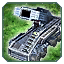

Patch 3662 beta
Welcome to the patchnotes for the 3662 patch.
This is the second part of the patch that has been tested since May, first by the tester team and later in the public beta by everyone. This latest version has again removed the HP changes, they're not tested enough. We've also delayed the Aeon ACU shield changes, Ythotha changes, and Billy changes. This list is the one that's being considered for release very soon.
The changes are now accessible through the FAF Beta featured mod. To help testing, please host and play games with the FAF Beta mod and post feedback on the balance forum!
These are the less controversial changes from the finished patch that will get released now. The more controversial changes will be decided after a full community vote about the general direction and methods of balancing, and the balance councillor.
It contains a few bugfixes, some adjustments, additions and improvements to changes of the last patch, and new things like the Janus that finally gets some real love.
We wish you good luck and much fun playing with the new patch!
-- The Balance Team
Land
 Thistle:
Thistle:
While the bomber changes of the first part can either be beneficial for Aeon players and their Auroras or not, the T2 nerfs were definitely welcome for them. To even this out a little bit, Aeon T1 MMA will now not survive a single bomb like the others, and tanks less damage in battle, but gets a small compensation in range.
- Health:
360→ 250 - Range:
32→ 35
 Flapjack:
All other MMLs did damage to friendly forces, but this one didn't. This evens the score.- Turned on friendly fire
Air
 Janus:
Janus:
The Janus bomber already saw significant improvements to its accuracy in the first part of the patch, but it wasn't the end of the process. This change completely re-works the bomber's firing cycle to ensure a large, even spread. The goal is to make it a more versatile and useful unit, while being different to the other t2 bombers. Where the other t2 bombers are most useful for taking out single targets, the role of the Janus will be taking out large armies with its AOE. It's almost impossible for all the bombs to hit one target, hence the higher overall damage.
- Number of Bomb Carpets:
2→ 3 - Damage (Per bomb, per damage tick):
5→ 6 - Initial damage (Per bomb, on impact):
75→ 30 - Bomb count:
8→ 20 - Damage over time duration:
2.5→ 4.2 - Total Damage:
1200→ 1800
 T1 bomber:
T1 bomber:
After observing the bomber changes from the last patch for a while now, and with a greater number of games to judge them, we are able to finetune them a little bit more.
- Mass cost:
120→ 105 - Energy cost:
2400→ 2450 - Build time:
800→ 700
 Mercy
Mercy
Mercies shouldn't circle in the air for a long time and run out of fuel before landing anymore.
Structures
 Aeon TMD:
Aeon TMD:
The last bugfixes with the Aeon TMD caused it to be even better at stopping missiles than it should have been!
- Rate of fire:
0.32→ 0.25
 T2 Land HQ
T2 Land HQ
This is another change where we are able to finetune the numbers as we got more information and feedback about the change since the last patch.
- Mass cost:
1520→ 1410 - Energy cost:
13300→ 11200
 Airstaging Platform
Airstaging Platform
We decreased the staging 'size' of most aircraft to make docking an easier and quicker process. Air staging platforms are now able to service more higher tech planes at once.
ACUs
 RAS & ARAS
RAS & ARAS
Nerfs to RAS have been discussed for a long time, as the powerful RAS had a couple of negative effects like a much faster jump to T3 air, especially in teamgames. The exact numbers, and if the nerf is best done by reducing income, or increasing cost, might change, but everyone who wished for a RAS nerf for a long time will hopefully be happy with this patch. Along with this, RAS SCUs become more expensive in power to make it a bit less easy to choose between them or massfabs lategame.
ACU RAS:- BuildTime:
1400→ 2800 - Energy cost:
150000→ 175000 - Aeon energy income:
2700→ 1700 energy - Seraphim energy income:
3000→ 2000 energy - UEF energy income:
3300→ 2500 energy - Cybran energy income:
3500→ 2700 energy
- Energy cost:
60000→ 90000
 T2 & T3 Upgrade
T2 & T3 Upgrade
The tech upgrades get some of their regen back to give ACUs an easier way to regenerate health again, but without making it able to compete with the Nano upgrades. The HP nerf for the T2 ACU gets reduced slightly to reduce the negative effects of it, but is replaced with a small cost increase for the dominant upgrade.
T2 Upgrade:- Health Regeneration:
0→ +10 - Health:
+1500→ +2000 - Energy cost:
18000→ 21000 - Mass cost:
720→ 800 - Build Time:
900→ 1000
- Health Regeneration:
0→ +20
 UEF ACU
UEF ACU
Several ACU upgrades got reduced cost to allow them to be built earlier and allow for more aggressive ACU action. Especially regarding the nerfs to the T2 upgrade last patch, which reduced the power of both attacking and defending ACUs, this changes should give players who like to play more aggressively additional tools.
Nano-Repair System:- Energy cost:
44800→ 24000 - Mass cost:
1200→ 800 - Build time:
1400→ 800 - Health bonus: +2000
- Health Regeneration:
+60→ +40
 Seraphim ACU
Seraphim ACU
Nano-Repair System:
- Energy cost:
90000→ 42000 - Mass cost:
2000→ 1200 - Build time:
2800→ 1200 - Health Regeneration:
+75→ +60 - Health:
6000→ 3000
 Selen
Selen Aeon naval TMD
Aeon naval TMD Transport drop acceleration
Transport drop acceleration